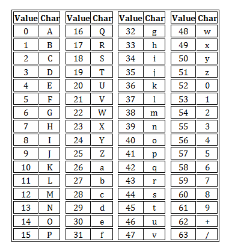

rollup及source map
基本使用
- -c, --config
Use this config file (if argument is used but value is unspecified, defaults to rollup.config.js) - -d, --dir
Directory for chunks (if absent, prints to stdout) - -e, --external
Comma-separate list of module IDs to exclude - -f, --format
Type of output (amd, cjs, es, iife, umd, system) - -g, --globals
Comma-separate list of moduleID:Globalpairs - -h, --help Show this help message
- -i, --input
Input (alternative to ) - -m, --sourcemap Generate sourcemap (
-m inlinefor inline map) - -n, --name
Name for UMD export - -o, --file
- -p, --plugin
Use the plugin specified (may be repeated) - -v, --version Show version number
- -w, --watch Watch files in bundle and rebuild on changes
rollup -w -c rollup.config.js -m
rollup.config.js
import custom from './plugins/custom.js'
export default{
input:'src/index.js', //入口
plugins:[
custom()
],
output: {
file: 'build/bundle.js',
format: 'umd' //兼容 规范 script导入 amd commonjs
}
}
source map
- 打包后的文件尾部会加上一行代码
//@ sourceMappingURL=bundle.js.map
- mappings属性
第一层是行对应，以分号（;）表示，每个分号对应转换后源码的一行。所以，第一个分号前的内容，就对应源码的第一行，以此类推。
第二层是位置对应，以逗号（,）表示，每个逗号对应转换后源码的一个位置。所以，第一个逗号前的内容，就对应该行源码的第一个位置，以此类推。
第三层是位置转换，以VLQ编码表示，代表该位置对应的转换前的源码位置。
例如: mappings:"AAAAA,BBBBB;CCCCC" 表示，转换后的源码分成两行，第一行有两个位置，第二行有一个位置。
'AAAAA'，由于A在VLQ编码中表示0，因此这个位置的五个位实际上都是0。它的意思是，该位置在转换后代码的第0列，对应sources属性中第0个文件，属于转换前代码的第0行第0列，对应names属性中的第0个变量。
- 第一位，表示这个位置在（转换后的代码的）的第几列。
- 第二位，表示这个位置属于sources属性中的哪一个文件。
- 第三位，表示这个位置属于转换前代码的第几行。
- 第四位，表示这个位置属于转换前代码的第几列。
- 第五位，表示这个位置属于names属性中的哪一个变量。
- VLQ编码(Variable-length quantity)
